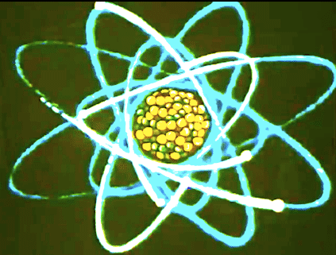
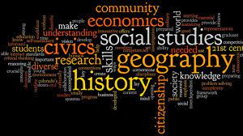

Science is typically divided into three major branches,that consist of the natural sciences (e.g., biology, chemistry, and physics), which study nature in the broadest sense; the social sciences (e.g., economics, psychology, and sociology), which study individuals and societies; and the formal sciences (e.g., logic, mathematics, and theoretical computer science), which deal with symbols governed by rules. There is disagreement,however, on whether the formal sciences actually constitute a science as they do not rely on empirical evidence. Disciplines that use existing scientific knowledge for practical purposes, such as engineering and medicine, are described as applied sciences.
Science is one of the option avaible for ths students who have just completed their 10th standard. To be Eligiblity- 55% aggregated, 80 out of 100 in Science.alone. Students who have completed their Junoir College from Science Stream can take up following courses in Degree College. Science will have subjects like Physics Chemistry along with some language subjects Students have to choose between Mathematics or Biology Or Both. Students can also take up Subjects like CS(According to once interest).
Students who have choose Science as their stream in 11th and 12th Standard can also take up courses such as B.com and BMS(Means they can take up some of commerce and arts stream as well). To know more about courses in scienceIn Commerce, basicly you will be learning how buying and selling of goods is done. The subject brings students abreast with the corporate culture and prepares them for their professional life.
Many students take up commerce because they dont want to learn commerce any further. Students even after getting good grades in 10th boards dont take Science as they want to be part of marketing sector. In commerce streams you will be mainly subject like Accountancy, Business Studies , Economics, OC(Organistion of Commerce) and etc. You will be asked to tally balance sheets and your will be working with numbers. Students of Commerce are also thought Mathematics in their curriculum and the Maths thought is very similar to Maths taught in Science stream. Therefore students of science fields are also qualified for Commerce courses in Degree colleges.
Students who have completed their Junoir College from Commerce Stream can take up following courses in Degree College.
Art is a wide range of human activities (or the products thereof) that involve creative imagination and an aim to express technical proficiency, beauty, emotional power, or conceptual ideas.
Arts is majorly compared with things which require drawing and painting. But there is more to arts. People who have completed their 12th from arts field can take up law and become a layer, or can take up psycology and become a psycologist. This means Arts is not just for people who can draw. But also for people who can be creative. There is misconception that Arts Stream is for the people who get low grade sin 10th, but this not true. When people get out junior college with and Arts degree you will be also having a self confidence and a better personality because the curiculum of Arts stream made for leaders and public speakers of world as it encourages students to have a better public spesaking skills by adding debate competition as a part of it.
Arts will have subjects like Political Science , History, Psychology,Sociology and also some language subjects.
Students who have completed their Junoir College from Arts Stream can take up following courses in Degree College.
To become a proper Psycologist you need to commplete your Ph.D(Doctorate) as well.